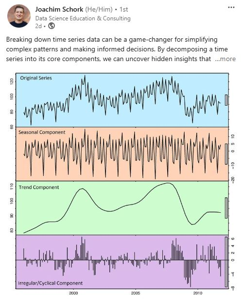
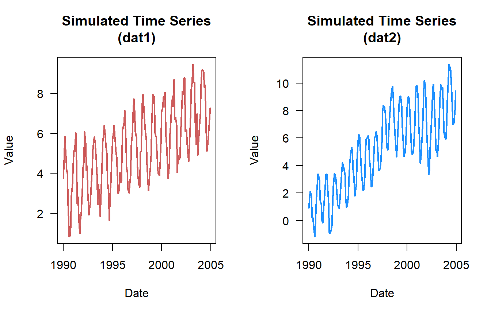
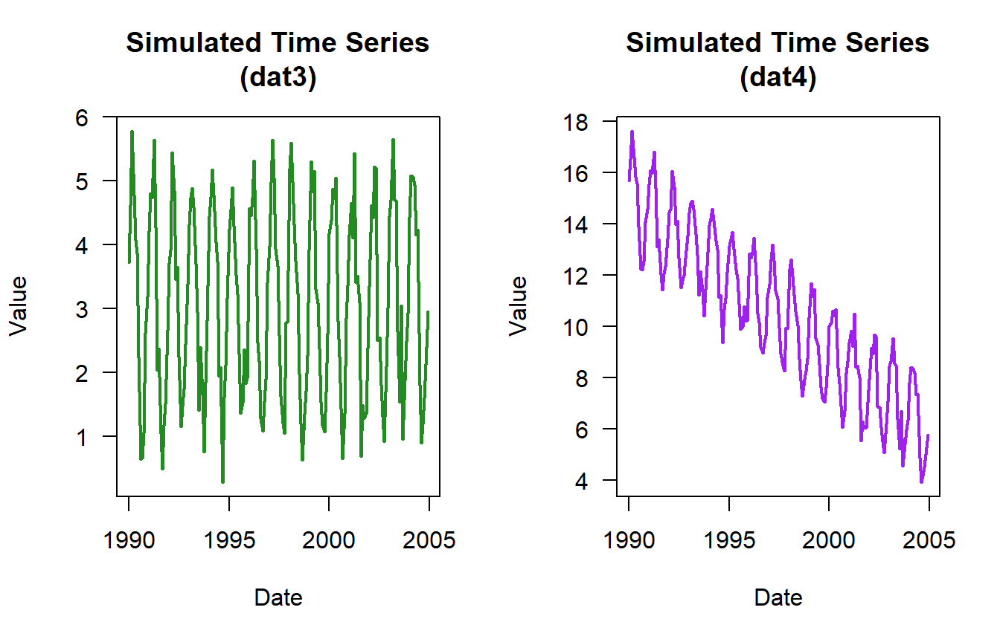
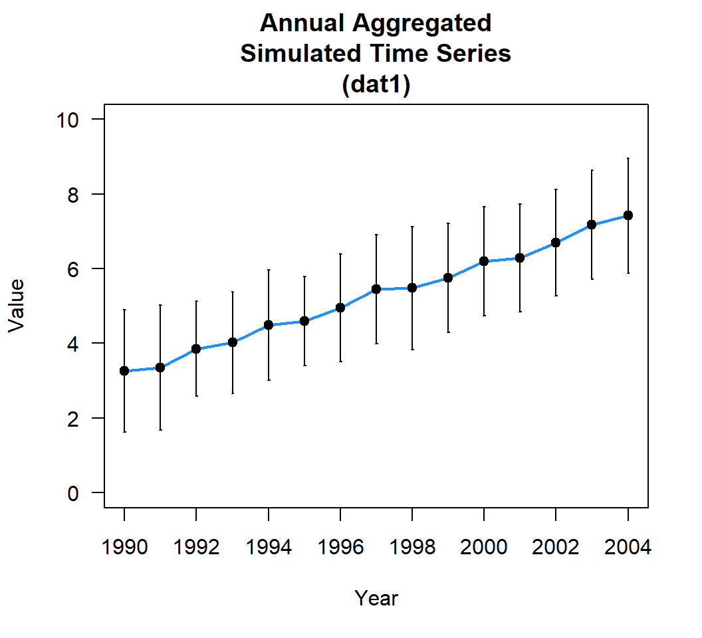
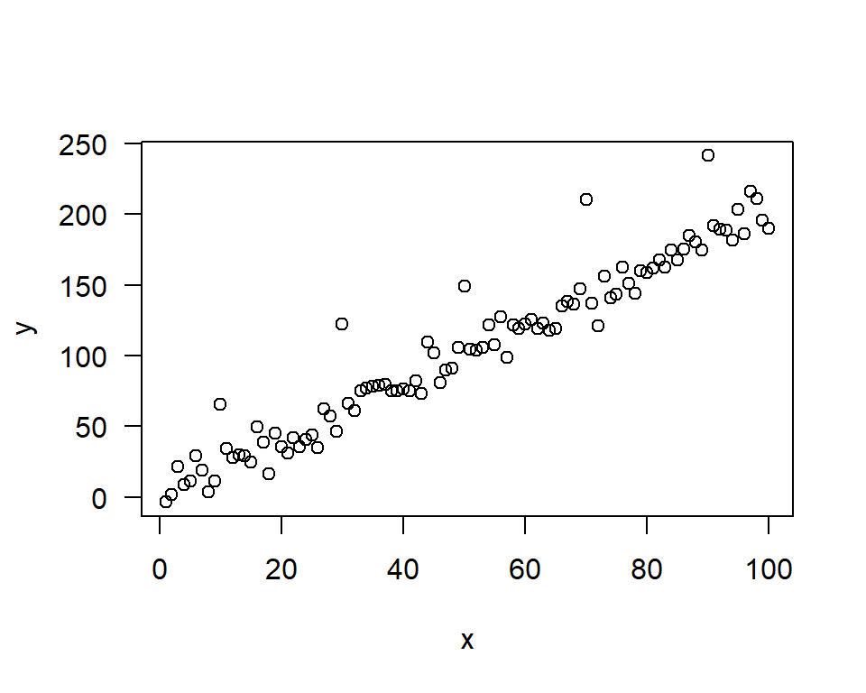

Time series Analysis (Part I), the basics
blog
time series
This blog post effectively breaks my blog writing dry streak. The last offical blog post (not stats related) was on my old blog platform (link) 1170 days ago! This post was motivated by a recent LinkedIn post by Joachim Schork about breaking down time series (see below and here) and the comments from the larger community. Its also motivated by a recent spur of time series decomposition analyses I’ve seen of late during meetings and discussions with colleagues.
Time series data
Definition
First, what is time series data? If you look in the dictionary it will say something along the lines of a series of values/measurements/observations obtained at successive times, often (but not always) with equal intervals between them. Simply put its data collected over time. In my corner of science that could mean daily water levels, weekly total phosphorus concentrations, annual seagrass coverage, etc. Once collected these data can analyzed in a variety of ways depending on the motivation of why and where its being collected. Again, in my realm of the science, something we are interested in is the change in conditions overtime for a variety of reasons including (but not limited to) climate change, landscape scale changes (i.e. land-use alterations, dam removal, stream diversion, etc.), restoration activities, forecast modeling, etc. In this case, a time series analysis is needed to see how things are changing overtime.
Formatting
When handling time series data in R you can either handle the data as a data.frame (or tibble if you are a tidyverse person … I personally am not, no judgement) or a ts object.
Generate some example value
set.seed(123)
values <- runif(5)|>
round(2)data.frame
ts
data.frame(Yr = 2012:2016,
value = values
) Yr value
1 2012 0.29
2 2013 0.79
3 2014 0.41
4 2015 0.88
5 2016 0.94ts(values, start = 2012)Time Series:
Start = 2012
End = 2016
Frequency = 1
[1] 0.29 0.79 0.41 0.88 0.94There are pros and cons of formatting the data either way. Most time series analysis functions can handle both in someway but most like it to be a ts object. The way the ts function works is it essentially converts the data into a special kind of data matrix (in R its called class or object) with an added header containing some information about the time series (like the example above). Depending on the information you include in the ts function it makes some assumptions, for instance with frequency = 12 it assumes its monthly data or frequency = 365 assumes daily.
rnorm(24)|>
round(2)|>
ts(frequency = 12) Jan Feb Mar Apr May Jun Jul Aug Sep Oct Nov Dec
1 -1.69 1.24 -0.11 -0.12 0.18 1.28 -1.73 1.69 0.50 2.53 0.55 0.24
2 -1.05 1.29 0.83 -0.06 -0.78 -0.73 -0.22 -0.33 -1.09 -0.09 1.07 -0.15See ?ts for more details on specifics. A very big drawback when using ts is if you are working with daily data with a leap year or years with leap years mixed in ts doesn’t know how to handle that extra day since the input is a vector or list of data. There might be a way to coerce it but I’ve yet to figure it out. Which is why I prefer to work in the data.frame world whenever possible.
Analyses
Most time series data exhibit some pattern, think about rainfall, climate cycle (ENSO), greenness of leaves, how many miles you drive/walk per unit time (i.e. week, month, etc.), etc. Analytically, these patterns can be split into components that make up the overall time series. Usually when talking about time series data terms like “trend” and “seasonality” come up. Obviously these terms have very specific meanings.
Generally “trend” is defined as some change in the data over time. The most basic statistical analysis for time series data is the Kendall trend test. This test evaluates a time series to determine if the data is monotonically changing (increasing up or down) overtime based on the Kendall-𝜏 coefficient. Statistical significance and the rate of change are also things to evaluate. More on that later. While the Kendall test is looking at monotonic linear trends, not all trends have to be “linear”. I have another blog post planned (I hope) for that, stay tuned!
Seasonal or seasonality is another important component for most time series analyses but not all. For instance if you have annual or decadal data, you won’t be looking at seasonality as those time steps aggregate across those periods. Seasonality, as in when the seasons occur is assumed to be fixed and at a known frequency (i.e. spring, summer, etc.).
Another term or component is cyclic or random. This is when the data show some fluctuations that don’t occur at a fixed frequency but occurs throughout the data set.
Synthetic Data
As an example this post (and the following series) rather than grabbing some random datasets as an example I wanted to use something that we have some knowledge on before digging into the specifics. This includes some of the components discussed above. To achieve this I put together some basic functions to simulate some data. The first function simulate_timeseries is relatively basic and simulate_timeseries_vol is a little more complex that includes some volatility and randomness factors.
simulate_timeseries <- function(n = 1000, # Number of observations
trend_slope = 0.01, # Slope of linear trend
seasonal_amp = 2, # Amplitude of seasonal component
seasonal_period = 12, # Period length
noise_mean = 1, # mean of noise
noise_sd = 0.5, # Standard deviation of noise
seed.val = 123 # value to set.seed(...)
){
if(is.null(seed.val)==F){set.seed(seed.val)} # for reproducibility
# Generate time points
t <- 1:n
# Create components
# 1. Linear trend
trend <- trend_slope * t
# 2. Seasonal component using sine wave
seasonal <- seasonal_amp * sin(2 * pi * t / seasonal_period)
# 3. Random noise (stationary component)
noise <- rnorm(n, mean = noise_mean, sd = noise_sd)
# Combine components
ts_data <- trend + seasonal + noise
# Convert to time series object
ts_result <- ts(ts_data, frequency = seasonal_period)
# Return both the time series and its components for analysis
return(list(
timeseries = data.frame(time = t, value = as.numeric(ts_result)),
components = list(
trend = trend,
seasonal = seasonal,
noise = noise
)
))
}
simulate_timeseries_vol <- function(n = 1000, # Number of observations
trend_slope = 0.01, # Slope of linear trend
seasonal_amp = 2, # seasonal component
seasonal_period = 12, # Period length
init_vol = 0.5, # Initial volatility
vol_persistence = 0.95,# Persistence in volatility
rw_sd = 0.1, # Random walk innovation SD
seed.val = 123 # value to set.seed(...)
){
if(is.null(seed.val)==F){set.seed(seed.val)} # for reproducibility
# Generate time points
t <- 1:n
# 1. Create non-linear trend (combining linear trend with random walk)
linear_trend <- trend_slope * t
random_walk <- cumsum(rnorm(n, 0, rw_sd))
trend <- linear_trend + random_walk
# 2. Create time-varying seasonal component
# Amplitude changes over time following a random walk
varying_amplitude <- seasonal_amp + cumsum(rnorm(n, 0, rw_sd/5))
seasonal <- varying_amplitude * sin(2 * pi * t / seasonal_period)
# 3. Generate time-varying volatility (GARCH-like process)
# Initialize volatility vector
volatility <- numeric(n)
volatility[1] <- init_vol
# Generate volatility process
for(i in 2:n) {
# Volatility follows AR(1) process with innovations
volatility[i] <- sqrt(0.01 +
vol_persistence * volatility[i-1]^2 +
(1 - vol_persistence) * rnorm(1, 0, 0.1)^2)
}
# 4. Generate heteroskedastic noise
noise <- rnorm(n, 0, 1) * volatility
# 5. Add structural breaks
# Add random level shifts
n_breaks <- max(1, round(n/200)) # Approximately one break every 200 observations
break_points <- sort(sample(2:n, n_breaks))
level_shifts <- cumsum(rnorm(n_breaks, 0, 2)) # Random shift magnitudes
breaks <- numeric(n)
current_break <- 1
for(i in 1:n) {
if(current_break <= length(break_points) && i >= break_points[current_break]) {
breaks[i:n] <- level_shifts[current_break]
current_break <- current_break + 1
}
}
# Combine all components
ts_data <- trend + seasonal + noise + breaks
# Convert to time series object
ts_result <- ts(ts_data, frequency = seasonal_period)
# Return both the time series and its components
return(list(
timeseries = data.frame(time = t, value = as.numeric(ts_result)),
components = list(
trend = trend,
seasonal = seasonal,
noise = noise,
breaks = breaks,
volatility = volatility
)
))
}Here are some example simulated datasets. Lets assume this data is monthly for a 15 year period of record.
n.vals <- 15*12 # 15 years 12 months per year
dat1 <- simulate_timeseries(
n = n.vals, # About 15 years of monthly data
trend_slope = 0.025, # Upward trend
seasonal_amp = 2, # Seasonal fluctuation of ±2
seasonal_period = 12, # Monthly seasonality
noise_sd = 0.5, # Moderate noise
noise_mean = 3
)
## add some years and months
dat1$timeseries <- cbind(dat1$timeseries,
expand.grid(Mon = 1:12, Yr = 1990:2004)
)
dat2 <- simulate_timeseries_vol(
n = n.vals, # About 15 years of daily data
trend_slope = 0.05, # Upward trend
seasonal_amp = 2, # Base seasonal amplitude
seasonal_period = 10, # Monthly seasonality
init_vol = 0.5, # Initial volatility
vol_persistence = 0.65,
rw_sd = 0.3
)
## add some years and months
dat2$timeseries <- cbind(dat2$timeseries,
expand.grid(Mon = 1:12, Yr = 1990:2004)
)
dat3 <- simulate_timeseries(
n = n.vals, # About 15 years of monthly data
trend_slope = 0.001, # no trend
seasonal_amp = 2, # Seasonal fluctuation of ±2
seasonal_period = 12, # Monthly seasonality
noise_sd = 0.5, # Moderate noise
noise_mean = 3
)
dat4 <- simulate_timeseries(
n = n.vals, # About 15 years of monthly data
trend_slope = -0.05, # downward trend
seasonal_amp = 2, # Seasonal fluctuation of ±2
seasonal_period = 12, # Monthly seasonality
noise_sd = 0.5, # Moderate noise
noise_mean = 15
)Here is a quick plot of the data …

Basic Trend Analysis
A simple trend test would look like this … For simplicity sake we are going to use time as its numeric but hypothetically decimal date (see lubridate::decimal_date for more info) is also an option.
cor.test(dat1$timeseries$time,dat1$timeseries$value,method = "kendall")
Kendall's rank correlation tau
data: dat1$timeseries$time and dat1$timeseries$value
z = 8.7492, p-value < 2.2e-16
alternative hypothesis: true tau is not equal to 0
sample estimates:
tau
0.438982 cor.test(dat2$timeseries$time,dat2$timeseries$value,method = "kendall")
Kendall's rank correlation tau
data: dat2$timeseries$time and dat2$timeseries$value
z = 11.996, p-value < 2.2e-16
alternative hypothesis: true tau is not equal to 0
sample estimates:
tau
0.6018622 Based on the plots you would have guessed that the datasets had an increasing trend. But here is what no-trend (dat3) and negative trend (dat4) looks like.

cor.test(dat3$timeseries$time,dat3$timeseries$value,method = "kendall")
Kendall's rank correlation tau
data: dat3$timeseries$time and dat3$timeseries$value
z = -0.24248, p-value = 0.8084
alternative hypothesis: true tau is not equal to 0
sample estimates:
tau
-0.01216636 cor.test(dat4$timeseries$time,dat4$timeseries$value,method = "kendall")
Kendall's rank correlation tau
data: dat4$timeseries$time and dat4$timeseries$value
z = -13.708, p-value < 2.2e-16
alternative hypothesis: true tau is not equal to 0
sample estimates:
tau
-0.6877716 Sometimes we are more interested in long term trends … be careful when using “long” and “short” these are usually very context specific and care should be taken to delineate/define as much as possible. For sake of brevity lets look at an annual trend analysis.
First, the data needs to be aggregated:
dat1_yr <- aggregate(value~Yr,dat1$timeseries,mean)You can also look at the annual variability or standard deviation using aggregate.
aggregate(value~Yr,dat1$timeseries,sd) Yr value
1 1990 1.631108
2 1991 1.674150
3 1992 1.277267
4 1993 1.359000
5 1994 1.481055
6 1995 1.197387
7 1996 1.442100
8 1997 1.458378
9 1998 1.646581
10 1999 1.457668
11 2000 1.455360
12 2001 1.447669
13 2002 1.428132
14 2003 1.460503
15 2004 1.533227
Or do something more elaborate to calculate all sorts of statistics. My preference (again not tidyverse) is functionality in the plyr package.
library(plyr)
ddply(dat1$timeseries,c("Yr"),summarise,
mean.val = mean(value),
sd.val = sd(value),
var.val = var(value),
N.val = length(value), #or AnalystHelper::N.obs(value)
SE = AnalystHelper::SE(value),
med.val = median(value),
min.val = min(value),
max.val = max(value))|>
round(2)# added to consolidate the table down Yr mean.val sd.val var.val N.val SE med.val min.val max.val
1 1990 3.26 1.63 2.66 12 0.47 3.61 0.84 5.85
2 1991 3.36 1.67 2.80 12 0.48 3.03 0.99 6.03
3 1992 3.85 1.28 1.63 12 0.37 4.20 1.92 6.09
4 1993 4.02 1.36 1.85 12 0.39 3.96 1.86 5.82
5 1994 4.48 1.48 2.19 12 0.43 4.82 1.65 6.40
6 1995 4.60 1.20 1.43 12 0.35 4.42 2.99 6.41
7 1996 4.96 1.44 2.08 12 0.42 4.88 3.03 7.14
8 1997 5.44 1.46 2.13 12 0.42 5.46 3.30 7.72
9 1998 5.48 1.65 2.71 12 0.48 5.27 3.15 7.95
10 1999 5.75 1.46 2.12 12 0.42 5.66 3.90 7.94
11 2000 6.20 1.46 2.12 12 0.42 6.26 3.74 8.05
12 2001 6.29 1.45 2.10 12 0.42 6.56 4.05 8.70
13 2002 6.70 1.43 2.04 12 0.41 6.46 4.61 8.78
14 2003 7.18 1.46 2.13 12 0.42 6.97 4.92 9.46
15 2004 7.42 1.53 2.35 12 0.44 7.79 5.12 9.17Once the data is aggregated we can use the simple Kendall test to look at the overall annual trend in the data.
cor.test(dat1_yr$Yr,dat1_yr$value,method = "kendall")
Kendall's rank correlation tau
data: dat1_yr$Yr and dat1_yr$value
T = 105, p-value = 1.529e-12
alternative hypothesis: true tau is not equal to 0
sample estimates:
tau
1 Looks like a perfect increasing trend! The Kendall-𝜏 is a type of correlation coefficient so the values should range between -1 and 1. Based on the 𝜌-value, (assuming an 𝛼-value of 0.05) this is a statistically significant trend. (Lets not get into the 𝜌-value discussion!)
We can also look at the rate of change. The most common is the Theil-Sen slope estimator. There are several different packages out there that can estimate Theil-Sen slope but the most basic one that I’ve come across is the median based linear model or mblm package. We can discuss the basics of Theil-Sen and mblm in a later post but after some digging and search what I’ve determined is that Theil-Sen method and median-based linear model are closely related. Generally, the Theil-Sen method is a non-parametric method that calculates the median of slopes of all lines through the data and the intercept is often the median of the residuals after fitting the slope. Meanwhile, the median-based linear model is a regression model that uses medians as a criterion for fitting a model and minimizes the sum of absolute residuals. In most cases, the Theil-Sen slope and the slope determined by the median-based linear model are the same with minuscule differences. Most trend routines use median-based linear models or quantile regressions as a basis to perform Theil-Sen estimation.
If you run the side-by-side of mblm, zyp and a separate Theil-Sen estimator pulled from the litature (found here) you’ll undoubtly come to similar, if not the same values. Don’t believe me lets give it a try.
library(zyp)
library(mblm)
# From University of Virigina function (from literature)
theil_sen <- function(x,y){
n <- length(x)
max_n_slopes <- (n * (n - 1)) / 2
slopes <- vector(mode = 'list', length = max_n_slopes) # list of NULL elements
add_at <- 1
# Calculate point-to-point slopes if x_i != x_j
for (i in 1:(n - 1)) {
slopes_i <- lapply((i + 1):n, function(j)
if (x[j] != x[i]) { (y[j] - y[i]) / (x[j] - x[i]) })
slopes[add_at:(add_at + length(slopes_i) - 1)] <- slopes_i
add_at <- add_at + length(slopes_i)
}
# Calculate Theil-Sen slope
slopes <- unlist(slopes) # drop NULL elements
theil_sen_slope <- median(slopes, na.rm = TRUE)
# Calculate Theil-Sen intercept
intercepts <- y - (theil_sen_slope * x)
theil_sen_intercept <- median(intercepts, na.rm = TRUE)
# Return
c('Theil-Sen intercept' = theil_sen_intercept,
'Theil-Sen slope' = theil_sen_slope)
}
set.seed(123)
# Generate linear data
x <- 1:100
y <- 2*x + rnorm(100, 0, 10)
# Add some outliers
y[c(10, 30, 50, 70, 90)] <- y[c(10, 30, 50, 70, 90)] + 50
plot(y~x,las=1)
zyp.sen <- zyp.sen(y~x); # zyp package
mblm.sen <- mblm(y~x,repeated = F); # mblm package
UV.sen <- theil_sen(x,y); # University of Virigina function (from literature) Pack intercept Slope
1 zyp 0.40106 2.01976
2 mblm 0.40106 2.01976
3 UV 0.40106 2.01976There you have it, all three methods produce the same estimates.
Back to our aggregated dataset, the code is pretty straight forward but there are a couple of things to be aware. If you’ve fit linear models using lm its the same general format. However, currently the mblm function can’t handle datasets with NAs (unlike lm), so you might have to clean up the data a little (i.e. na.omit() can be your friend). Also double check that both variables are numeric.
library(mblm)
dat1.theilsen <- mblm(value~Yr,dat1_yr,repeated=F)
dat1.theilsen
Call:
mblm(formula = value ~ Yr, dataframe = dat1_yr, repeated = F)
Coefficients:
(Intercept) Yr
-587.9833 0.2971 # extrapolate example
predict(dat1.theilsen,data.frame(Yr=2005:2014),interval ="confidence") fit lwr upr
1 7.629230 7.500516 7.757944
2 7.926294 7.784963 8.067624
3 8.223357 8.069143 8.377572
4 8.520421 8.353116 8.687725
5 8.817484 8.636929 8.998040
6 9.114548 8.920614 9.308482
7 9.411611 9.204195 9.619028
8 9.708675 9.487692 9.929658
9 10.005739 9.771119 10.240358
10 10.302802 10.054488 10.551116The Theil-Sen estimator for the annually aggregated data is 0.297 units per year. This is the rate of annual change. If this was something like sea-level rise, rainfall rate, population growth, etc. you can do a very basic analysis and ask at this rate what would the values be in 10 years (extrapolating … 10.3 units) or in the case of sea-level rise whats the rise per decade (2.97 units per decade)?
Whats next?
To avoid making this blog post a novel, I’m going to cut this post short. We went over the basics of time series, what they are/how they are defined, what it looks like in the R environment, generating some synthetic time series for examples and a quick overall trend test. This post kicks off a series of posts that will delve into other aspects of time series analyses such as trend analysis data requirements, seasonal trend analyses, stationary, periodicity, time series decomposition and an alternative to time series decomposition.
Session Info
- Session info ---------------------------------------------------------------
setting value
version R version 4.1.0 (2021-05-18)
os Windows 10 x64 (build 19045)
system x86_64, mingw32
ui RTerm
language (EN)
collate English_United States.1252
ctype English_United States.1252
tz America/New_York
date 2024-11-04
pandoc 2.19.2
quarto 1.3.450
- Packages -------------------------------------------------------------------
package * version date (UTC) lib source
AnalystHelper * 0.1.5 2024-10-31 [] local
Kendall * 2.2.1 2022-03-20 [] CRAN (R 4.1.3)
mblm * 0.12.1 2019-01-26 [] CRAN (R 4.1.1)
plyr * 1.8.8 2022-11-11 [] CRAN (R 4.1.3)
sessioninfo * 1.2.2 2021-12-06 [] CRAN (R 4.1.3)
zyp * 0.11 2023-01-26 [] CRAN (R 4.1.3)
------------------------------------------------------------------------------